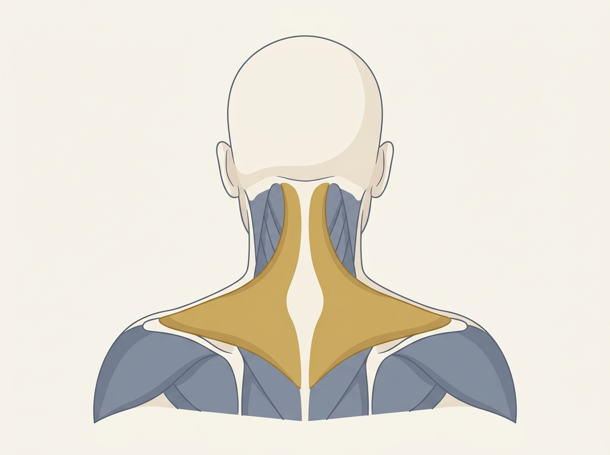
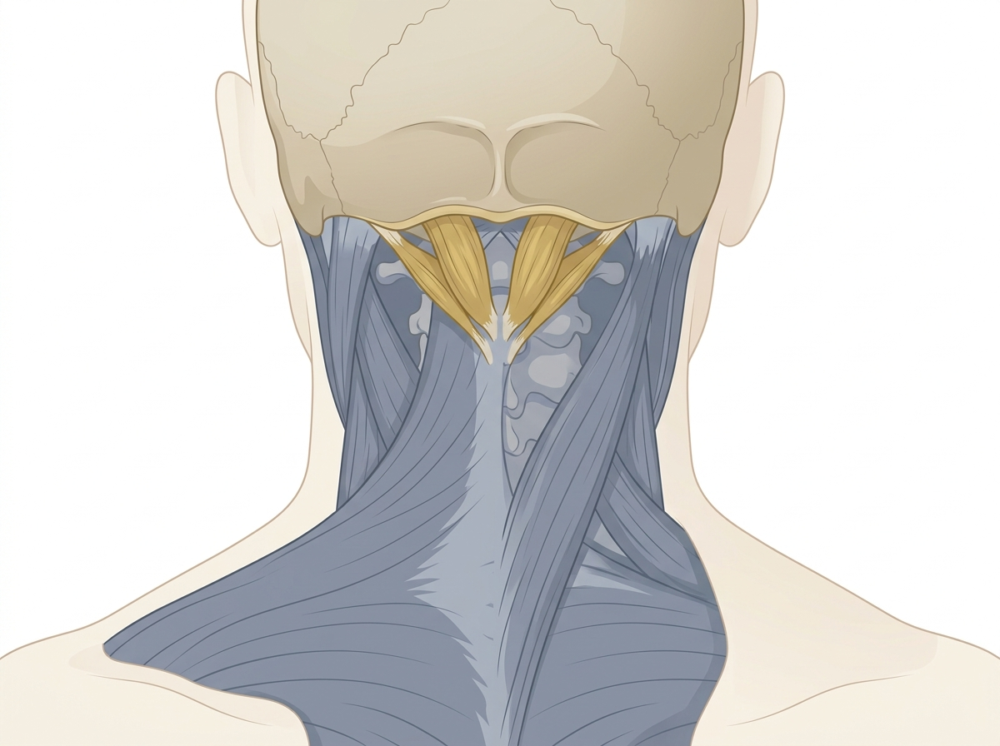
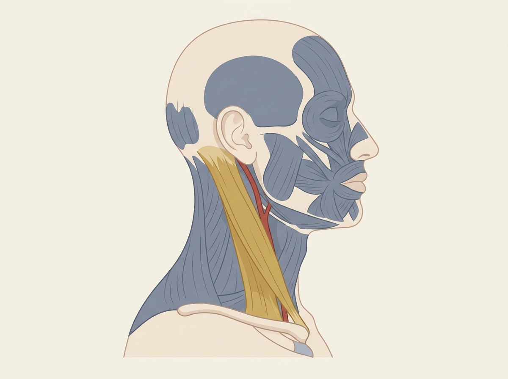

| 🤲 手でやること（実演・撮る絵） | 🗣 口で読むこと（プロンプター） |
|---|---|
| ・モデルの首の付け根→肩先を指でなぞる（僧帽筋の位置出し） ・その帯を手のひら全体で包む（つかまないデモ） ・後頭部の骨の縁のすぐ下に、指の腹4本を当てる（後頭下筋群） ・モデルに顔を横へ向けてもらい、浮いた筋をそっとなでる（胸鎖乳突筋。強く押さない） ・自分の首で3か所を触るセルフ触診の見本（3分・視聴者が真似できる向き） | S01–S02 挨拶＋今日やること（カメラA・座り）／S03 僧帽筋の一言（手を肩に置いたまま）／S04 後頭下の一言（指を骨の縁に当てたまま）／S05 胸鎖乳突筋の一言（手を止めて）／S06 セルフ触診の導入／S07–S08 宿題＋締め（カメラA） |
img/ 直下に配置。凡例（色→部位名）はHTML側の日本語で付与し、画像には文字を入れない。| 種類 | ファイル名 | 作るもの | 使う場面（TC） |
|---|---|---|---|
| AI生成解剖図 | PG13_01_trapezius_back.png | 首肩を後ろから見たマップ。僧帽筋上部をゴールド強調、他はグレー | 04:30 本編②僧帽筋 |
| AI生成解剖図 | PG13_02_suboccipital_back.png | 後頭部アップ。後頭骨の下縁とその下の後頭下筋群をゴールド強調 | 09:00 本編③後頭下 |
| AI生成解剖図 | PG13_03_scm_side.png | 横顔の首。胸鎖乳突筋をゴールド、近くの太い血管（頸動脈）をレッドで併記 | 13:30 本編④胸鎖乳突筋 |
| 図解 | — | 「コリの震源」対比図（こっている場所 ≠ 原因の場所）／デスクワーク姿勢図（頭前方偏位・肩すくみ）に3筋をうっすら重ねた1枚 | 01:20 全体像 |
| 警告テロップ | — | 「⚠ 近くに太い血管。強く押さない・つかまない・そっと」（パート中は常時表示。解剖図の頸動脈と連動） | 13:30 胸鎖乳突筋 |
| 図解 | — | 3筋連動フロー図（前＝引かれる／後ろ＝支える／付け根＝背負う→1つの姿勢に矢印集約） | 18:00 連動パート |
| 比較テロップ | — | 説明トーク①〜③の全文字幕（「〜と言われています」に下線＋ゴールド）＋「配布あり」バッジ | 21:00 説明トーク |
| 図解 | — | セルフ触診ミラー図（左右反転ガイド）＋残り時間バー（3:00→0:00） | 24:00 セルフ触診 |
| テンプレ見本 | — | 「今日から現場で使える1つ」全画面1枚（下カードの文言そのまま） | 27:00 復習 |
| テロップ | — | 復習クイズ3問（一時停止アイコン＋正解をゴールドでハイライト） | 29:30 クイズ |
| 実演インサート | — | カメラC（斜め後ろ）で骨の縁・肩の稜線をなぞる別カット | 位置説明の差し込み |
| 番号 | PG13（カリキュラムv6） |
|---|---|
| タイトル | 解剖学②｜首肩・後頭下 ＝ コリの震源 |
| 尺 | 約32分（OP・先週回収 約1分／本編 約20分／説明トーク例 約3分／セルフ触診 約3分／復習・クイズ・接続 約4分／ED 約1分） |
| 収録形態 | 触診ナレ型。画面は常に太郎さんの手がモデルの首肩の上。ナレーション＋図解テロップが「いま指が当たっているのが僧帽筋」と重なる。講義スライドなし。太郎さんはOP／ED＋本編の指定の一言（S03〜S05）＋セルフ触診の導入（S06）のみ発話。説明はすべてナレーション＋テロップが担う。 |
| 必要機材 | ①カメラA＝太郎さんOP/ED用（バストアップ）／②カメラB＝手元寄り（モデルの首肩に置いた太郎さんの手をアップで追う）／③カメラC＝斜め後ろ（後頭下・僧帽筋の触り方を別アングルで確保）／④ピンマイク（太郎さん）＋ナレーション収録ブース／⑤首肩CG（僧帽筋・後頭下筋群・胸鎖乳突筋を1つずつ点灯できるレイヤー）／⑥デスクワーク姿勢図（頭前方偏位・肩すくみ）／⑦セルフ触診ガイド図 |
| モデル | 首・肩・後頭部が触れる状態のモデル1名（襟を下げられる服またはケープ、髪をまとめる）。セルフ触診パートは太郎さんが自分の首で見本を見せる（視聴者が鏡のように真似できる向き）。 |
| 参照PG | 流用元＝旧PG20「解剖学（統合1本）」首肩パート＋新規／前提＝PG10 解剖学①頭の地図／接続先＝PG14 首肩コリのリリース（撮影済）／関連手技＝PG09 太郎ハンド3種・PG11 頭皮の筋膜リリース |
| コンプラ | 薬機法：効果断定なし。「リラクゼーションを目的に」「緊張がたまりやすい場所として知られています」「〜と言われています／示唆されています」で統一。治る・改善・血流が良くなる・自律神経が整う・育毛はNG。胸鎖乳突筋は頸動脈が近いため「強く押さない・そっと」を触診・テロップ・ナレの三層で明示。数字・実績は捏造しない。 |
| 時間 | パート | 内容 | 層 |
|---|---|---|---|
| 00:00–00:30 | OP | 太郎さん挨拶＋今日のゴール宣言（S01・S02） | 🎬 層1 |
| 00:30–01:00 | 先週回収 | 先週PG12（腕＋手のひらの筋膜リリース）の宿題・良い例紹介 | 🎙 層2 |
| 01:00–01:20 | OPテロップ | タイトル＋今日の地図（3筋）予告 | 📺 層3 |
| 01:20–04:30 | 本編① 全体像 | 「コリの震源」とは。デスクワーク姿勢が3筋を緊張させる。今日触る3つの筋を地図にする | 🎬 層1 🎙 層2 📺 層3 |
| 04:30–08:30 | 本編② 僧帽筋（上部） | まず解剖図①（首肩の後ろ姿マップ）を画面に出し、ナレが位置・働き・触り方ガイド（肩に"のせて"しまう場所）を指す→太郎さんの手が同じ場所を触る触診実演 | 🎬 層1 🎙 層2 📺 層3 |
| 08:30–09:00 | 太郎さん一言① | 僧帽筋の触れ方の勘所（S03） | 🎬 層1 |
| 09:00–13:00 | 本編③ 後頭下筋群 | 解剖図②（後頭部アップ）を画面に出し、ナレが位置・働き・触り方（目と首の疲れの震源）を指す→太郎さんの手が骨の縁の下を触る触診実演 | 🎬 層1 🎙 層2 📺 層3 |
| 13:00–13:30 | 太郎さん一言② | 後頭下の触れ方の勘所（S04） | 🎬 層1 |
| 13:30–17:30 | 本編④ 胸鎖乳突筋 | 解剖図③（横顔の首・頸動脈を凡例で明示）を画面に出し、ナレが位置・働き・触り方（前側の見落とし・頸動脈注意）を指す→太郎さんの手が顔を横に向けて浮いた筋をそっとなでる触診実演 | 🎬 層1 🎙 層2 📺 層3 |
| 17:30–18:00 | 太郎さん一言③ | 胸鎖乳突筋の触れ方の勘所（S05） | 🎬 層1 |
| 18:00–21:00 | 本編⑤ 3筋の連動 | デスクワーク姿勢が「震源」を作る仕組み。3筋を1枚の地図に統合 | 🎙 層2 📺 層3 |
| 21:00–24:00 | 説明トーク例 | デスクワーク客への説明トーク3場面（読み上げ台本・ナレ実演） | 🎙 層2 📺 層3 |
| 24:00–27:00 | セルフ触診3分 | 視聴者が自分の首肩で3部位を確認（太郎さんが見本／ナレがガイド） | 🎬 層1 🎙 層2 📺 層3 |
| 27:00–29:30 | 復習 | 3筋を地図で総ざらい＋「今日から現場で使える1つ」まとめテロップ | 🎙 層2 📺 層3 |
| 29:30–31:30 | 復習クイズ＋接続 | 一時停止クイズ（3問）＋翌週PG14「首肩コリのリリース」への接続 | 🎙 層2 📺 層3 |
| 31:30–32:30 | ED | 太郎さん 宿題1つ＋締め（S07・S08） | 🎬 層1 📺 層3 |
先週は、腕と手のひらの、筋膜リリースでした。宿題は、自分の前腕と手のひらを、ゆっくりゆるめる、というものでしたね。
良い例を、ひとつ紹介します。ただ触るのではなく、「ここが前腕、ここが手のひら」と、場所の名前を、声に出しながら触れている。これが、いちばん身につく形です。名前と、指の感覚が、セットになるからです。
今日も、同じように進めます。首と肩を、名前と感覚で、覚えていきましょう。
前回のPG10では、頭の地図を覚えました。今日は、その続き。首と肩です。
画面には、これから最後まで、私の手が映り続けます。スライドは出しません。指が、どこに当たっているのか。それを、地図と重ねて、確認していきます。
はじめに、ひとつ、考え方をお伝えします。「コリの震源」という考え方です。
肩がこる。首が張る。多くのお客様は、その「こっている場所」を、もんでほしいと言います。けれど、こっている場所は、地震でいう「揺れているところ」です。私たちが探すのは、その揺れを生んでいる、「震源」のほうです。
その震源は、たいてい、決まった場所にあります。今日おぼえる、3つの筋肉です。
ひとつ、僧帽筋（そうぼうきん）。首の付け根から、肩、そして背中へ広がる、大きな筋肉です。
ふたつ、後頭下筋群（こうとうかきんぐん）。頭と首の境目にある、小さな筋肉のあつまりです。
みっつ、胸鎖乳突筋（きょうさにゅうとつきん）。首の前から、横にかけて走る、太い筋肉です。
なぜ、この3つなのか。理由は、姿勢にあります。
デスクワークを思い出してください。画面を見て、頭が前に出る。肩が上がって、すくむ。あごが、前に突き出る。この姿勢が、何時間も続きます。
そのあいだ、いま挙げた3つの筋肉は、頭の重みと、腕の重みを、ずっと支え続けています。休むひまが、ありません。だから、緊張がたまりやすい場所として知られています。
今日は、この3つの震源を、ひとつずつ、位置と、働きと、触り方で、地図にしていきます。触る理由が分かると、来週のリリースが、まったく違うものになります。

まず、僧帽筋です。首の付け根から、肩の先、そして背中の真ん中まで、背中いっぱいに広がる、大きな筋肉です。ひし形をしています。
今日、私たちがおもに触れるのは、その中でも、いちばん上の部分。「上部（じょうぶ）」と呼ばれる、首から肩にかけての帯です。
働きを見ましょう。この上部の僧帽筋は、肩をすくめる、肩を持ち上げる、という働きをします。
（太郎さんの手：モデルの首の付け根から肩先へ、稜線をなぞる）
ためしに、肩を、ぐっと上げてみてください。首と肩のあいだが、かたく盛り上がります。それが、僧帽筋の上部です。
問題は、ここからです。緊張したとき、寒いとき、パソコンに集中したとき。私たちは、無意識に、肩を上げています。そして、上げたまま、下ろすのを忘れてしまう。一日じゅう、重い肩を、この筋肉に「のせて」いる状態です。
これが、肩こりの、いちばん分かりやすい震源です。
触り方のガイドです。まず、位置。首の付け根と、肩先を結んだ、あの稜線（りょうせん）。その盛り上がりが、上部の僧帽筋です。
（太郎さんの手：親指と、そろえた4本の指で、稜線の帯をやわらかく挟む）
とらえ方は、「面」です。指先で一点をえぐるのではなく、手のひら全体で、帯を、やさしく包みます。
そして、つかみません。ぎゅっと握ると、お客様は身構えて、かえって力が入ります。皮ふごと、ゆっくり、上下に動かすイメージです。
中くらいの、心地よい圧。痛みを我慢させる圧ではありません。中くらいの圧は、心拍や血圧がしずまる方向と関連すると、マッサージの研究群で示唆されています。
ここは、来週のPG14で、実際にゆるめていく、いちばんの主役です。今日は、場所と、面でとらえる感覚を、覚えてください。
僧帽筋の上部は、「稜線を、面で、つかまずに」。これが基本です。

次は、後頭下筋群です。頭と首の、ちょうど境目。後頭部の骨の、すぐ下にある、小さな筋肉のあつまりです。
（太郎さんの手：後頭部のいちばん出っぱった骨から、下へ指をすべらせる）
位置を確認します。後頭部の、いちばん出っぱった骨。そこから、下へ指をおろすと、横に走る、骨の縁（ふち）に当たります。その縁の、すぐ下の、くぼみ。ここが、後頭下筋群のある場所です。
この筋肉は、とても小さいのですが、大切な仕事をしています。目を動かすこと。そして、頭の、ほんのわずかな傾きを、支えること。
ここが、なぜ「震源」なのか。理由は、目です。
パソコンやスマートフォンの画面を、じっと見つめる。目が、細かく動き続ける。うつむいて、頭が前に落ちる。そのあいだ、この後頭下筋群は、頭の重みを支えながら、目の動きにも付き合っています。休みが、ありません。
「目が疲れると、首の後ろが張る」。これは、この筋肉の場所で、起きていることだと言われています。目の疲れと、首のこりが、ここでつながっているのです。
触り方のガイドです。
（太郎さんの手：骨の縁の下に、指の腹を4本、すべり込ませる）
指の腹を、骨の縁の、すぐ下に、すべり込ませるように当てます。そして、上の骨を、下から持ち上げるように、ゆっくり、圧を入れます。
大切なのは、頭の重みを、指で受ける、という感覚です。お客様には、力を抜いて、指に頭をあずけてもらいます。
グリグリと、こすってはいけません。小さな筋肉なので、強い刺激は、かえって身構えさせます。温かい手で、頭の重みを、静かに受け止める。それだけです。
温かい手で触れると、こわばりがゆるむ方向に向かうと、温熱の基礎研究で示唆されています。触れる前に、手のひらをこすり合わせて、温めておくとよいでしょう。
後頭下筋群は、「骨の縁の下で、頭の重みを、静かに受ける」。これが基本です。

3つめは、胸鎖乳突筋です。名前が長いので、分けて読みます。胸（きょう）、鎖（さ）、乳突（にゅうとつ）。胸の骨と、鎖骨と、耳の後ろの出っぱりを、つないでいる筋肉、という意味です。
場所は、首の、前から横です。ここまでの2つは、首の後ろでした。この筋肉だけ、前側にあります。だから、いちばん、見落とされます。
位置の確認です。
（太郎さんの手：モデルに軽く顔を横へ向けてもらい、浮き上がる筋を指でなぞる）
お客様に、顔を、ゆっくり横へ向けてもらいます。すると、首の前に、太い筋が、斜めに浮き上がります。耳の後ろから、鎖骨の内側へ。これが、胸鎖乳突筋です。
働きを見ましょう。この筋肉は、頭を横に向けたり、あごを前に出したり、頭を前へ傾けたりするときに働きます。
では、なぜ、震源なのか。ここでも、姿勢です。
画面をのぞきこむと、頭が、前に出ます。いわゆる、頭が前に落ちた姿勢です。このとき、前側にあるこの筋肉は、前に落ちようとする頭を、後ろから引き止めるように、ずっと引っ張られ続けます。前かがみの時間が長いほど、この筋肉は、こっそり疲れていきます。
首の後ろだけでなく、前側にも震源がある。これを知っているかどうかで、施術の幅が変わります。
触り方のガイドです。ここは、いちばん、注意が必要な場所です。
（太郎さんの手：親指と人差し指で、浮き上がった筋を"そっと"つまむ／なでる。強く握らない）
この筋肉の、すぐ近くには、太い血管が通っています。ですから、強く押し込んだり、ぐっとつかんだりは、しません。
顔を軽く横に向けて、筋を浮かせた状態で、親指と人差し指で、そっと挟む。あるいは、上から下へ、やさしくなでる。それだけで、じゅうぶんです。
「そっと・浮かせて・なでる」。強い圧は、いりません。ここは、ていねいさが、そのまま技術になる場所です。
胸鎖乳突筋は、「顔を向けて浮かせ、そっとなでる」。これが基本です。
ここまで、3つの震源を見てきました。僧帽筋の上部。後頭下筋群。胸鎖乳突筋。
最後に、この3つが、ばらばらではない、ということをお伝えします。
もう一度、デスクワークの姿勢を思い出してください。
画面を見て、頭が前に出る。すると、前側の胸鎖乳突筋が、頭を引き止めようと、引っ張られます。
頭が前に落ちれば、後ろでは、後頭下筋群が、その重みを支えようと、ふんばります。
そして、その頭と腕の重みを、首の付け根で受け止めているのが、僧帽筋の上部です。
つまり、この3つは、ひとつの姿勢によって、同時に、追い込まれています。前で引っぱられ、後ろで支え、付け根で背負う。1枚の地図の上で、3つの震源が、つながっているのです。
（図解：デスクワーク姿勢に3筋を重ね、3本の矢印が「1つの姿勢」に集まる）
だから、首肩のこりは、一か所をもんでも、なかなかスッキリしません。震源が、3つあるからです。3つを地図として持っておくと、お客様の首肩を触ったときに、「今日は前が張っているな」「今日は後頭下だな」と、あたりをつけられるようになります。
場所が分かれば、手は、迷いません。これが、今日いちばんお伝えしたい、地図の使い方です。
ここからは、いま覚えた地図を、お客様に「言葉」で伝える練習です。とくに、デスクワークのお客様に、そのまま使える例を、3つ読み上げます。トーンと、間の取り方も、まねしてみてください。3つとも、断定はしていません。「〜と言われています」「〜を目的に」という止め方に、注目してください。
説明トーク①｜施術前の声かけ
「お仕事、パソコンの前が長いですか。実は、画面を見ているときって、頭が少し前に出て、その重みを、首と肩がずっと支えているんです。とくに、肩の付け根、首の後ろ、それから首の前側。この3か所は、デスクワークの方で、力が入りやすい場所だと言われています。今日は、その3か所を、ゆっくりゆるめていきますね。痛いことはしませんので、安心して、力を抜いてください。」
説明トーク②｜施術中のひとこと（後頭下・僧帽筋に触れながら）
「いま触っているのは、頭と首の境目です。ここは、目をよく使う方ほど、張りやすい場所だと言われています。パソコンやスマホを見ていると、目と一緒に、この奥の小さな筋肉も、ずっと働いているんですね。強く押さずに、頭の重みを、私の指で受けている感じです。肩のほうも、一日ぶんの力が、のっていますね。ゆっくり、下ろしていきましょう。」
説明トーク③｜施術後のクロージング
「お疲れさまでした。今日ゆるめたのは、首の後ろと、前と、肩の付け根。デスクワークで、いちばん力がたまりやすい場所です。ここは、放っておくとまた張ってくる場所なので、ためこむ前に、また休みにいらしてくださいね。ご自宅でも、画面を見る時間が長いなと思ったら、一度、肩をすとんと下ろすだけでも違いますよ。続けて休ませてあげることが、いちばんのリラクゼーションになりますから。」
3つとも、丸暗記でなくてかまいません。大切なのは、「3つの場所」と、「デスクワークで力がたまる」という理由を、自分の言葉で、やさしく話せることです。言葉も、技術の一部です。
ここから3分。太郎さんが、自分の首で、見本を見せます。画面を見ながら、いっしょに、自分の首と肩を触ってみてください。強く押さず、場所を「感じる」ことが目的です。
（0:00〜1:00｜僧帽筋）
まず、右手を、左の首の付け根に、そっと置きます。首と肩のあいだの、盛り上がった帯です。手のひら全体で、包むように。指先でえぐらないでください。
そのまま、左の肩を、いちど、ぐっと上げて、すとんと下ろします。上げたとき、盛り上がるのが分かりますか。それが、僧帽筋の上部です。反対側も、同じように、確認してください。
（1:00〜2:00｜後頭下筋群）
次に、両手を、後頭部へ。いちばん出っぱった骨から、指を下へおろすと、横に走る骨の縁に当たります。その、すぐ下のくぼみに、指の腹を、そっと当てます。
当てたら、力を抜いて、頭の重みを、指にあずけます。指で、頭を、下から支えるだけ。押しません。ここが、目の疲れとつながる、後頭下筋群です。じんわりと、重みを感じてください。
（2:00〜3:00｜胸鎖乳突筋）
最後に、顔を、ゆっくり左へ向けます。すると、首の右前に、太い筋が、斜めに浮き上がります。耳の後ろから、鎖骨へ。そこを、親指と人差し指で、そっと挟みます。強く、つままないでください。
挟んだまま、顔を、ゆっくり正面へ戻します。筋が、やわらぐのが分かります。反対側も、同じように。これが、前側の震源、胸鎖乳突筋です。
3つ、触れましたね。この「指の感覚」が、来週のリリースの、土台になります。
ここまでを、地図で総ざらいします。
僧帽筋の上部。首の付け根から肩先の、盛り上がった帯。肩に力を「のせて」しまう場所。触り方は、面でとらえ、つかまない。
後頭下筋群。頭と首の境目、骨の縁の下のくぼみ。目の疲れとつながる場所。触り方は、頭の重みを、指で静かに受ける。
胸鎖乳突筋。首の前から横へ、斜めに走る筋。頭が前に出る姿勢で引っぱられる、前側の震源。触り方は、顔を向けて浮かせ、そっとなでる。
この3つは、デスクワークの姿勢で、同時に追い込まれています。前で引かれ、後ろで支え、付け根で背負う。3つで、ひとつの地図です。
最後に、復習クイズです。画面を一時停止して、考えてみてください。
1問目。「肩に力を"のせて"しまう、首の付け根から肩先の、大きな筋肉は？」……答えは、僧帽筋です。
2問目。「目の疲れとつながる、頭と首の境目にある、小さな筋肉のあつまりは？」……答えは、後頭下筋群です。
3問目。「首の前から横へ斜めに走り、そっとなでるのが基本の筋肉は？」……答えは、胸鎖乳突筋です。
3つ、分かりましたか。分からなかった場所は、もう一度、自分の首で触ってみてください。
そして、来週です。来週は、PG14「首肩コリのリリース」。今日おぼえた、この3つの震源を、実際に、手でゆるめていきます。撮影済みの、実技の回です。
今日の地図があれば、来週、私の手が「どこを、なぜ触っているのか」が、はっきり分かります。場所を知ってから技を見ると、同じ映像でも、まったく違って見えます。楽しみにしていてください。
09_台本_v6/配布物パック_v6.md の「PG13」セクションに収録